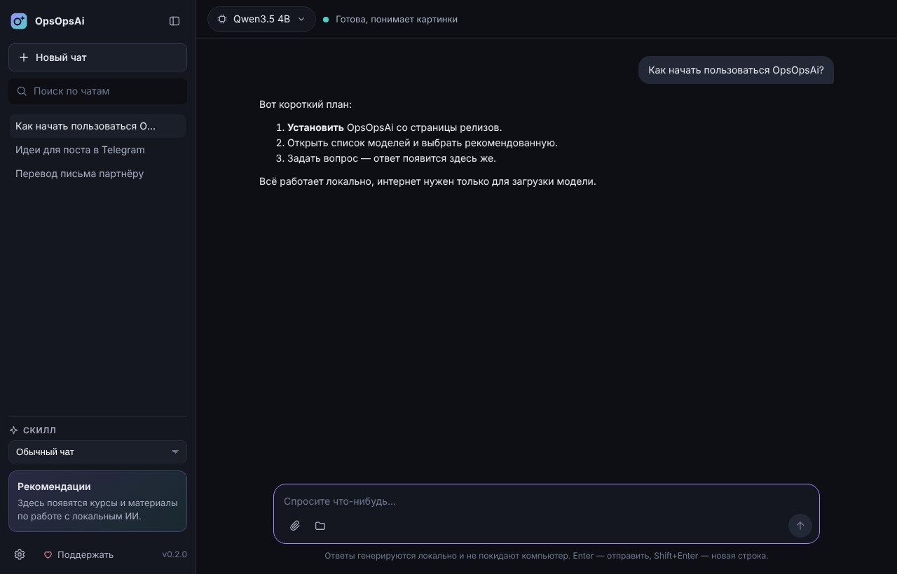

Ранний доступ, версия 0.2.1
Ваш ИИ работает
на вашем компьютере
Бесплатное приложение для общения с нейросетями без облака. Модель живёт у вас, поэтому переписка не уходит на чужие серверы и чат работает даже без интернета.
macOS на Apple Silicon, Windows, Linux x64 и ARM64

Что умеет версия 0.2.1
Это ранний доступ: основное уже работает, остальное приходит обновлениями прямо в приложение.
Уже работает
- Подбор моделей под ваш компьютер: не потянет — не предложим
- 9 моделей Qwen и Gemma, все понимают картинки
- Установка в один клик с проверкой подлинности файлов
- Чат с ответами в реальном времени и историей
- Файлы, папки и картинки как вложения
- Скиллы: переводчик, редактор, помощник программиста
Появится дальше
- PDF и документы Word во вложениях
- Свои скиллы с собственными инструкциями
- Расширения от других авторов
На чём построено
- Без облака
- Модель и диалоги хранятся на вашем диске. Интернет нужен только чтобы скачать модель.
- Без настройки
- Не нужно ставить Python, Docker или драйверы вручную: приложение само проверит компьютер и предложит подходящую модель.
- Бесплатно
- Приложение бесплатное целиком, без пробного периода и ограничений по времени.
- Безопасно
- Обновления и модели проверяются по подписи и контрольной сумме перед установкой.
Как начать
-
Скачайте и установите
Выберите файл для своей системы ниже. Дальше приложение будет обновляться само.
-
Выберите модель
OpsOpsAi покажет, какие модели потянет ваш компьютер и сколько места они займут, и установит выбранную в один клик.
-
Общайтесь
Задавайте вопросы, прикладывайте файлы, сохраняйте удачные настройки как скиллы.
Скачать
Последняя версия с GitHub. Если список не загрузился, все файлы есть на странице релиза.
- macOSApple Silicon (M1 и новее).dmg
- Windows10 и 11, x64установщик .exe
- Linuxx64.AppImage
- LinuxARM64.AppImage
Сборки пока не подписаны Apple и Microsoft. На macOS при первом запуске откройте «Системные настройки», раздел «Конфиденциальность и безопасность», и нажмите «Всё равно открыть». На Windows в окне SmartScreen нажмите «Подробнее» и «Выполнить в любом случае».
Почему бесплатно?
Честно — потому что могу. Мне нравится делать полезные вещи, и хочется, чтобы локальный ИИ был доступен каждому, а не только тем, кто готов разбираться в настройках или платить за подписку.
OpsOpsAi делает один разработчик в свободное время. Если приложение вам пригодилось, буду рад поддержке — но это просьба, а не условие. Само приложение останется бесплатным: без пробных периодов и урезанных функций.
Новости проекта — в Telegram-канале.